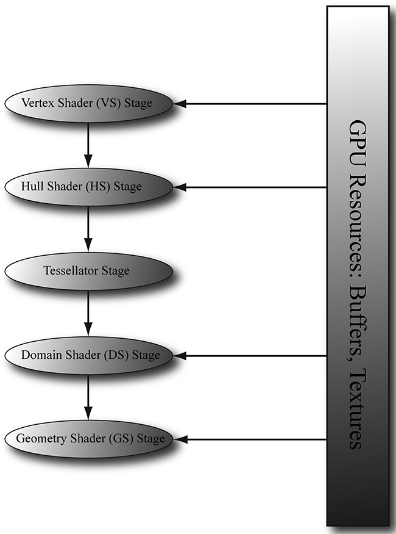
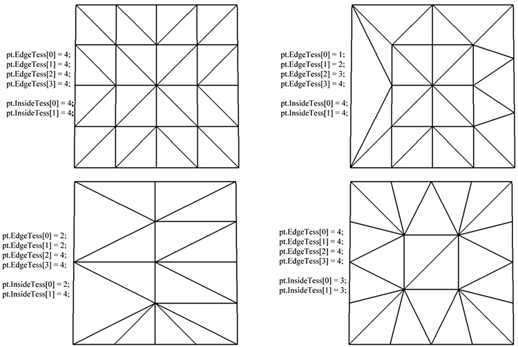
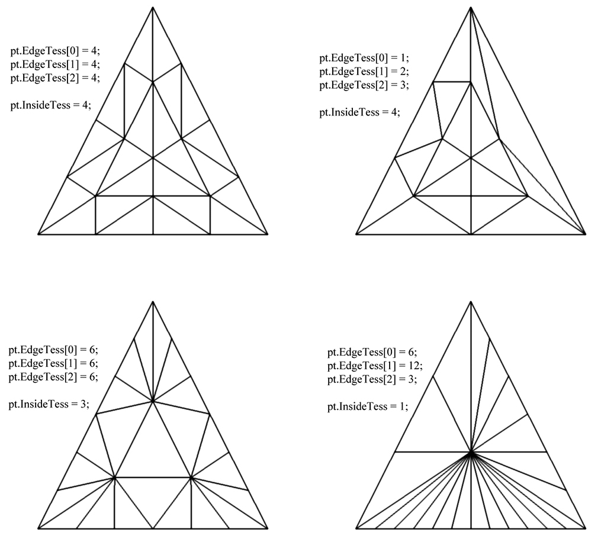
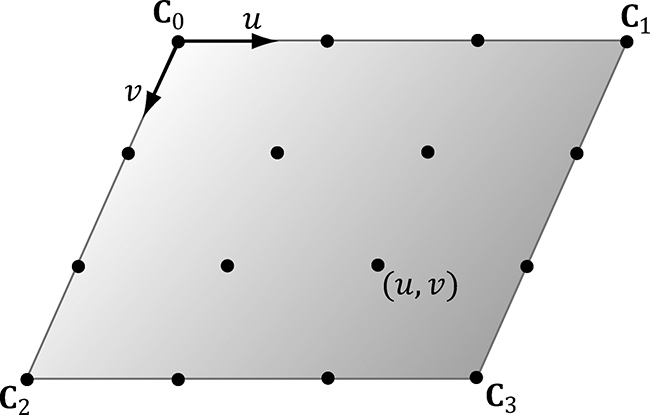
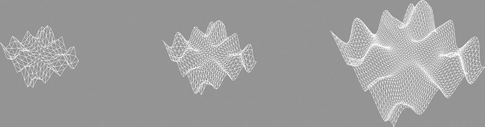
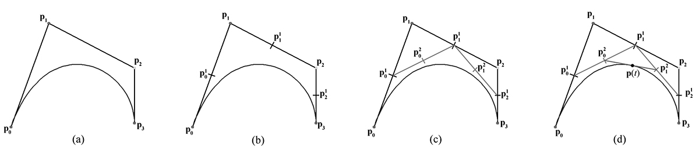
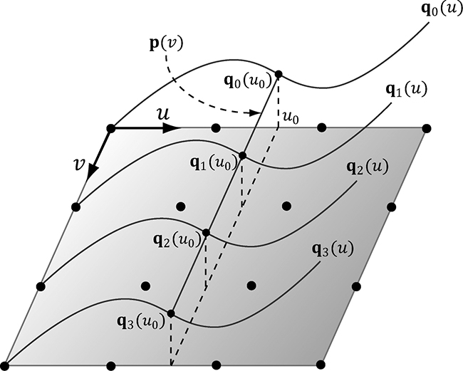
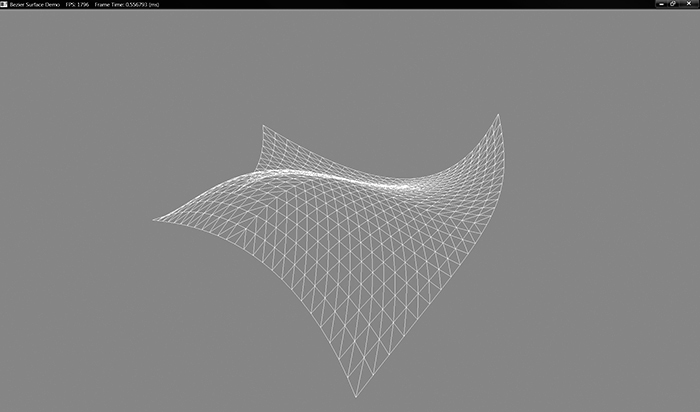

本章学习目标（Objectives）
- 理解"少顶点进、多顶点出"的曲面细分三阶段：HS → Tessellator → DS；
- 掌握 Patch（补丁）、控制点、细分因子等概念；
- 实战四边形细分与贝塞尔曲面（近处细、远处粗的动态 LOD）。
网格内存占用与三角形数的矛盾：想要近看细腻又要性能——把细分交给 GPU 实时做。
14.1 细分图元类型（Tessellation Primitive Types）
IA 阶段拓扑改成 patchlist（1/2/3/4 控制点的 patch list）。Patch = 一组控制点（不一定是三角形的顶点！），数量任意（1–32），细分后形状由 DS 决定。HS 可选输出 SV_PrimitiveID。
14.2 外壳着色器（The Hull Shader, HS）
每个 patch 调用一次，两件事：
- 输出控制点：可以原样传递，也可以升级/变换（比如把 3 个点变成更易插值的表示）；
- 常量外壳函数（Patch Constant Function）：每 patch 一次，输出细分因子（tess factors）——决定"分多细"（边缘因子 + 内部因子），还可传其他 patch 级常量。
[domain("quad")] [partitioning("integer")] [outputtopology("triangle_cw")] [outputcontrolpoints(4)] [patchconstantfunc("QuadPatchHS")] HS_OUT HS(InputPatch<VS_OUT, 4> patch, uint id : SV_OutputControlPointID) {...}
细分因子按视距算：离相机越近因子越大（动态 LOD），书里给了 1/d 缩放公式。
14.3 镶嵌器（The Tessellation Stage，固定功能）
不可编程的硬件阶段：按细分因子把 patch 的规范域（quad 的 [0,1]² 或三角形的重心域）切成小单元，输出各顶点的域参数 (u,v) 与连接关系。还支持分数细分（fractional_even/odd，切分点带小数，LOD 平滑过渡不闪烁）。
14.4 域着色器（The Domain Shader, DS）
每个细分出的新顶点调用一次：拿到域坐标 uv + HS 的控制点，按公式算出真实位置（quad 用双线性插值，贝塞尔用 Bernstein 多项式），之后照常送进 GS/光栅化。注意：细分发生在投影之前的本地/世界空间。
14.5 四边形细分（Tessellating a Quad）
Quad demo：一个 4 控制点的平面 quad，按距离细分，DS 里双线性插值并把 y 做成波浪起伏。演示了边缘/内部因子与生成的顶点网格形态的对应关系。
14.6 三次贝塞尔四边形（Cubic Bézier Quad Patches）
16 控制点的贝塞尔曲面：用 Bernstein 基 B(t) = (1−t)³ + 3(1−t)²t + … 组合出"拉过头再拽回来"的光滑曲线/曲面（书中先用 2D 曲线图解 De Casteljau 递归插值，再推广到双参数曲面）。Bezier demo：一个可交互变形的贝塞尔曲面片，按视距动态细分。
本章小结
- 三阶段分工：HS 算因子/传控制点 → 镶嵌器切域 → DS 由 uv 算真实位置。
- Patch 控制点 1–32 个，拓扑用 *_control_point_patchlist。
- 细分因子按视距计算实现动态 LOD，分数细分防跳变。
- 贝塞尔曲面 = 16 控制点 + Bernstein 插值。
🖼️ 原书插图（8 张，点击展开）







